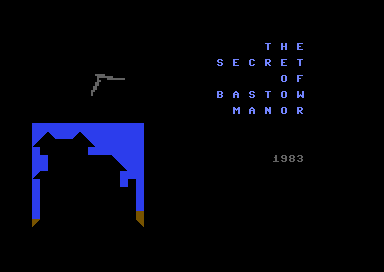

<meta charset="utf-8">
<meta name="viewport" content="width=device-width, initial-scale=1">
<title>{{title}}</title>
<link rel="preconnect" href="https://fonts.googleapis.com">
<link rel="stylesheet" href="https://fonts.googleapis.com/css2?family=Lato:wght@400;700;900&family=IBM+Plex+Mono:wght@400;500&display=swap">
<link rel="stylesheet" href="reference/bastow-page.css">
<!-- tabs -->
<header class="hero">
  <p class="eyebrow">{{platform}} · {{year}} · {{publisher}}</p>
  <h1>{{title}}</h1>
  <p class="sub">Every picture is a few lines of <code>PRINT</code>, and the only moving shapes are six sprite shapes poked in from <code>DATA</code>.</p>
</header>
<main class="wrap">
<section id="places">
  <h2 class="t">A place is a routine</h2>
  <p>The game has no picture files and no character set of its own. Each of the <a href="levels.html#places">twenty-seven places</a> is drawn by its own run of <code>PRINT</code> lines using the Commodore 64’s built-in graphics characters and colour codes, and line 51 (<code>$0B3A</code>) chooses the routine with <code>ON B GOTO</code>. The gates are line 2000, the library line 4450, and the cell line 4500. The place’s name, its objects, and its exits are printed under the picture.</p>
  <p>The border and background are black throughout except the laboratory, where the border and background are poked to colour 2. The <a href="levels.html#places">Maps page</a> shows all twenty-seven results.</p>
</section>

<section id="sprites">
  <h2 class="t">The sprites</h2>
  <p>The program keeps its sprite shapes as numbers in <code>DATA</code> lines and <code>POKE</code>s them into three 64-byte blocks, 13, 14 and 15, at <code>$0340</code>, <code>$0380</code> and <code>$03C0</code>. It does this twice. The first set is for the title, the second replaces it afterwards and holds the three shapes used in play. Each shape is 63 bytes, 24 dots across and 21 down.</p>
  <div class="plate">
    <p class="fig">Title set, lines 6000 to 6016</p>
    <div class="row" id="s-title"></div>
    <p class="cap">Three frames of one small flying shape. Line 5007 swaps the sprite pointers between blocks 13, 14 and 15 as two copies cross the title screen along its diagonals, one going down and one coming up.</p>
  </div>
  <div class="plate" style="margin-top:18px">
    <p class="fig">Play set, lines 6100 to 6134</p>
    <div class="row" id="s-play"></div>
    <p class="cap">Left to right: the <b>safe</b> (block 13, sprite 0, yellow, doubled in both directions), the <b>robot</b> (block 14, sprite 3, multicolour and doubled: yellow body, blue and white details) and the <b>skeleton</b> (block 15, sprite 4, white, doubled in both directions). The robot is drawn here in two-bit pixels as the chip would; the other two are one colour. Colours and doubling come from the registers poked at lines 1720, 3320 and 4422.</p>
  </div>
</section>

<section id="title">
  <h2 class="t">The title screen</h2>
  <p>The title is a blue house built from <code>PRINT</code> lines 4910 to 4918, with the words “the secret of bastow manor” spaced out beside it. The year 1983 appears when the ninth note of the <a href="music.html#tune">title tune</a> has been read. The flying sprites start only after the tune ends.</p>
  <figure class="overview-shot"><figcaption>The title with the year and one of the sprites.</figcaption></figure>
</section>

<section id="death">
  <h2 class="t">Other screens</h2>
  <p>Death has its own picture: a tombstone and flowers at line 1650 (<code>$42C3</code>), followed by a sound that fades the volume down in sixteen steps. The library’s book and the falling safe have screens of their own too, and the dark room’s switch shows an advertisement.</p>
  <figure class="overview-shot"><figcaption>The advertisement the dark room’s switch shows. See <a href="discoveries.html#advert">Discoveries</a>.</figcaption></figure>
</section>
</main>
<script>
(function(){
  var D={"title": [0, 1, 0, 0, 1, 0, 0, 1, 0, 0, 3, 0, 0, 3, 0, 0, 3, 0, 0, 6, 0, 0, 12, 0, 0, 12, 0, 0, 8, 0, 248, 120, 0, 31, 252, 0, 15, 224, 0, 0, 0, 0, 0, 0, 0, 0, 0, 0, 0, 0, 0, 0, 0, 0, 0, 0, 0, 0, 0, 0, 0, 0, 0, 0, 0, 0, 0, 0, 0, 0, 0, 0, 0, 0, 0, 0, 0, 0, 0, 0, 31, 0, 0, 120, 0, 7, 240, 0, 7, 224, 0, 14, 0, 0, 120, 0, 0, 60, 0, 0, 96, 0, 1, 192, 0, 3, 128, 0, 15, 0, 0, 30, 0, 0, 56, 0, 0, 96, 0, 0, 0, 0, 0, 0, 0, 0, 0, 0, 0, 0, 0, 0, 0, 0, 0, 0, 0, 0, 0, 0, 0, 0, 0, 0, 0, 0, 0, 0, 0, 0, 0, 0, 0, 0, 0, 0, 0, 124, 0, 0, 63, 192, 0, 33, 255, 0, 48, 0, 0, 96, 0, 0, 96, 0, 0, 192, 0, 0, 192, 0, 1, 128, 0, 1, 0, 0, 1, 0, 0], "play": [0, 0, 0, 0, 0, 0, 0, 0, 0, 0, 0, 0, 0, 0, 0, 3, 255, 192, 2, 0, 64, 2, 255, 64, 2, 239, 192, 2, 199, 64, 2, 239, 64, 2, 255, 192, 2, 255, 64, 2, 0, 64, 3, 255, 192, 2, 0, 64, 0, 0, 0, 0, 0, 0, 0, 0, 0, 0, 0, 0, 0, 0, 0, 0, 0, 0, 0, 40, 0, 0, 8, 0, 0, 40, 0, 0, 0, 0, 0, 20, 0, 4, 61, 0, 6, 173, 0, 0, 61, 0, 0, 20, 0, 0, 60, 0, 0, 20, 0, 0, 60, 0, 0, 4, 0, 0, 4, 0, 0, 12, 0, 0, 12, 0, 0, 4, 0, 0, 4, 0, 0, 60, 0, 0, 60, 0, 0, 56, 0, 0, 56, 0, 0, 16, 0, 0, 16, 0, 0, 254, 0, 1, 147, 0, 1, 125, 0, 0, 16, 0, 1, 125, 0, 1, 1, 0, 1, 109, 0, 1, 85, 0, 0, 68, 0, 0, 68, 0, 0, 0, 0, 0, 68, 0, 0, 68, 0, 0, 68, 0, 0, 68, 0, 0, 198, 0, 1, 199, 0]};
  var PAL={1:'#ffffff',6:'#4a3fbf',7:'#e8d860'};
  function draw(el,bytes,mc,col,scale){
    var c=document.createElement('canvas'); c.width=24*(mc?2:1); c.height=21; 
    c.style.width=(c.width*scale)+'px'; c.style.height=(21*scale)+'px'; c.style.background='#000'; c.style.imageRendering='pixelated'; c.style.borderRadius='4px';
    var x=c.getContext('2d');
    for(var r=0;r<21;r++){
      var bits=''; for(var k=0;k<3;k++){var v=bytes[r*3+k]; bits+=('00000000'+v.toString(2)).slice(-8);}
      if(!mc){ for(var i=0;i<24;i++) if(bits[i]==='1'){x.fillStyle=col;x.fillRect(i,r,1,1);} }
      else { for(var j=0;j<12;j++){var p=bits.substr(j*2,2); if(p==='00')continue; x.fillStyle=p==='01'?PAL[6]:(p==='10'?PAL[7]:PAL[1]); x.fillRect(j*2,r,2,1);} }
    }
    var f=document.createElement('figure'); f.style.margin='0'; f.appendChild(c); el.appendChild(f); return f;
  }
  var t=document.getElementById('s-title'), p=document.getElementById('s-play');
  for(var i=0;i<3;i++) draw(t,D.title.slice(i*63,i*63+63),false,'#ffffff',8);
  draw(p,D.play.slice(0,63),false,PAL[7],8);
  draw(p,D.play.slice(63,126),true,null,4);
  draw(p,D.play.slice(126,189),false,PAL[1],8);
})();
</script>
<footer style="margin:16px 0 0;padding:22px var(--gx) 0;border-top:1px solid #e0ded8;font-family:'IBM Plex Mono',ui-monospace,Menlo,monospace;font-size:12px;color:#80838a"><a href="https://github.com/gamesexplained/gamesexplained" style="color:#1f5fa8;text-decoration:none">GitHub</a> · <a href="https://discord.gg/3V9GWyRDWV" style="color:#1f5fa8;text-decoration:none">Discord</a><br>© Games Explained contributors. Write-ups, facts and symbol maps are available under <a href="https://creativecommons.org/licenses/by-sa/4.0/" style="color:#1f5fa8;text-decoration:none">CC BY-SA 4.0</a>; code under <a href="https://opensource.org/licenses/MIT" style="color:#1f5fa8;text-decoration:none">MIT</a></footer>
